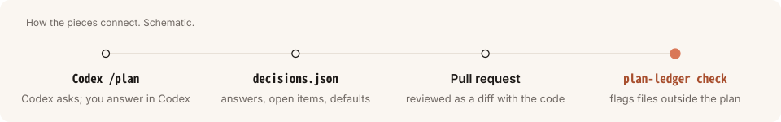
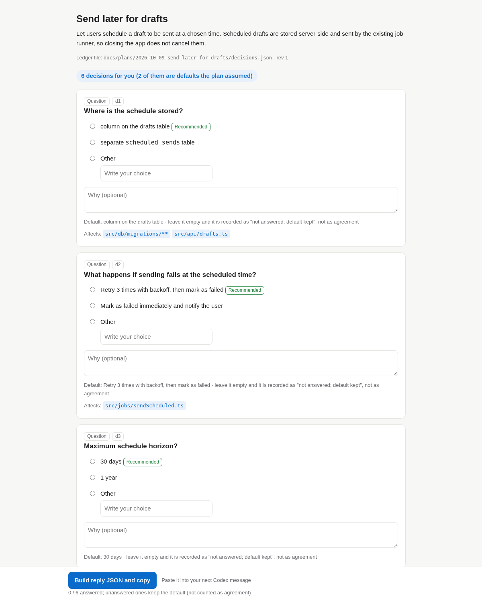
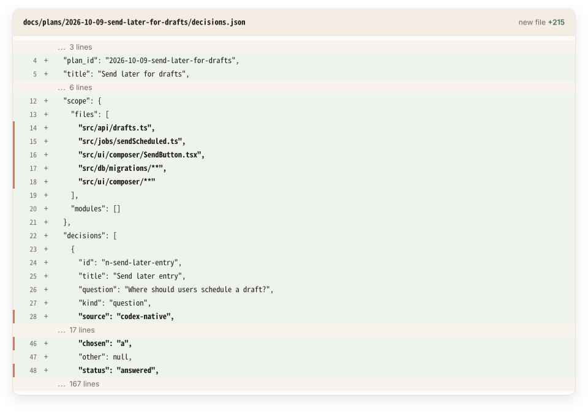
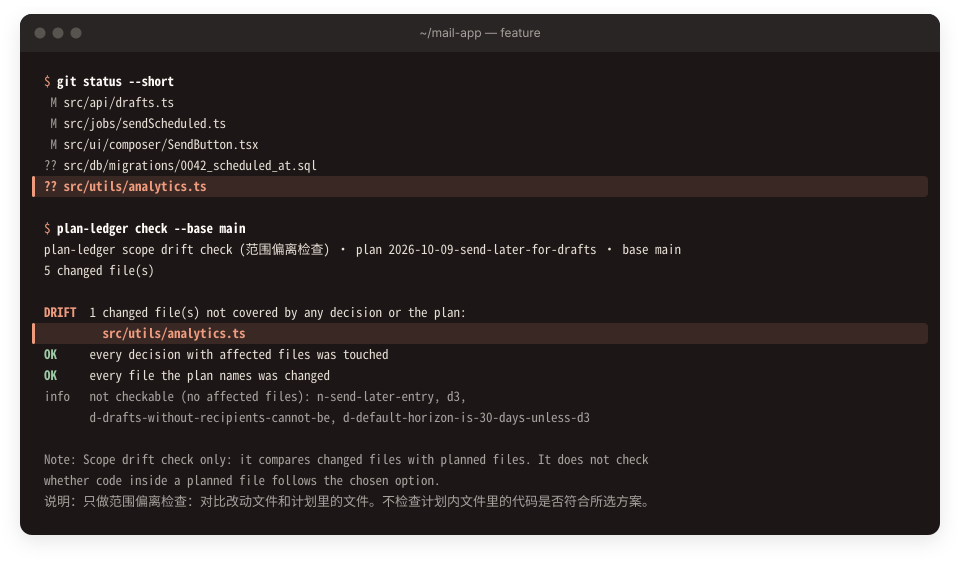

A decision ledger for Codex /plan
After coding, one command shows what changed outside the plan.
Codex agreed to a plan with you. plan-ledger check lists the changed files that plan never named, and every decision sits in the PR as a diff of decisions.json.
- Scope drift check. Lists changed files the plan never named, and planned files nobody touched. In 3 runs with planted drift: unplanned file caught 3/3, untouched planned files 3/3, no false alarm on a clean tree 3/3.
- Decisions in the PR. The questions Codex asked you, the plan's open choices and its stated defaults are written to
decisions.json, so the reviewer sees what was chosen and why. - Stays out of the way. Runs as a Codex Stop hook: no extra model calls, no network, never waits.
npm i -g github:miniLV/codex-plan-ledger && plan-ledger init --write
Early prototype · v0.1 Across 3 measured pairs, rounds did not improve (2 losses, 1 tie). The check reads file lists, not code: contradictions inside a planned file were caught 0/3. Details
How it works
Keep using Codex's native Plan mode and answer its questions in Codex. Rendering never calls a model.
Stop hook writes the ledger
Parse the plan, write
decisions.jsonand an offline HTML page, end the turn. It never blocks and never waits.Review on one page
Open, answered, and default items are shown apart. Copy the reply JSON into your next Codex message when done.
Decisions in the PR
The ledger is reviewed next to the code: what was chosen, and why.
Scope drift check
plan-ledger check --base maincompares changed files with the plan's scope.

Every decision in one reviewable place
One card per decision: options, recommendation, default, affected files. Items answered in Codex are marked; plan defaults are reviewable and not counted as open. Unanswered means default kept, not agreement.
- Plain templates. No model, offline, one file.
- The hook never waits for you.
- Answers are carried across plan revisions and marked as carried.

Decisions in the PR
The ledger is a plain JSON file next to the code. Reviewers see the plan's scope, the question Codex asked and the answer, in the same diff as the change.

Demo
The page the hook writes, rendered from the bundled synthetic plan (test/fixtures/send-later.message.md) plus one synthetic question answered in Codex. Pick options, then press the button at the bottom. Nothing leaves your browser.
Scope drift check
Compares git diff with each decision's affected files and the files named in the plan. Reports unplanned files and untouched decisions. --strict exits 1 on drift, for CI or pre-commit.
File lists only. Contradicting code inside a planned file is not caught in v0.1. That is why it is called a scope drift check, not a decision-compliance check.

Status and measurements
Directional only, n = 3 pairs over two rounds. Not evidence of an effect. No pair won on rounds (2 losses, 1 tie). The tool does not aim to cut rounds.
| Round / task | Rounds until final native / ledger | Planning input tokens native / ledger | Total tokens native / ledger | Verify |
|---|---|---|---|---|
| 1 / strict-option | 1 / 2 | 294,933 / 372,651 | 717,487 / 586,971 | both pass |
| 2 / strict-option | 1 / 2 | 65,931 / 83,141 | 180,208 / 205,644 | both pass |
| 2 / month-unit | 1 / 1 | 79,553 / 66,354 | 179,053 / 140,020 | both pass |
Scope drift check on the 3 plan-ledger runs, planted after implementation: clean tree, no false positive 3/3; unplanned new file caught 3/3; planned files reverted caught 3/3; contradicting code inside a planned file caught 0/3, matching the known limit.